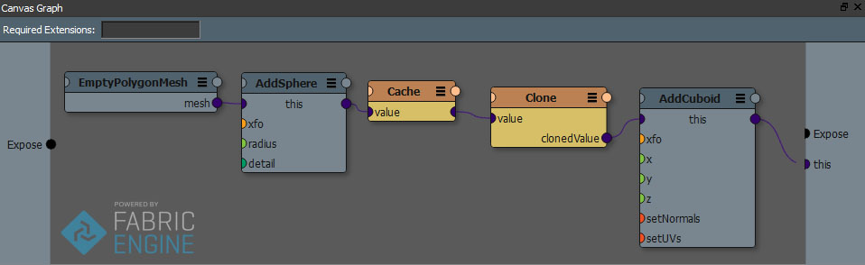

Caches¶
注釈
より詳しい技術的詳細はプログラマガイド内 キャッシュ を参照してください。
Cacheノードは Canvasに取って特殊なノードです。Cacheノードは何も変更されなかった場合自身のノード左側の不要な再計算を避けます。グラフの特定部分が再度計算されなくて良い場合に使いましょう。グラフにCacheを加えるには TAB を押し cache と検索欄に入力しましょう。

Cacheノードの結果は不変かつ変更不可です。これはグラフ下流からは変更できません。キャッシュ内容の変更が必要であるなら、複製をはさみます。ただし、複製操作は非常に高コストです。キャッシュ導入があなたの狙い通りに割にあうかどうか、ちょっとずつ実験してみましょう。クローンノードを追加するには TAB and type clone です。
